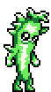
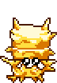
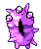
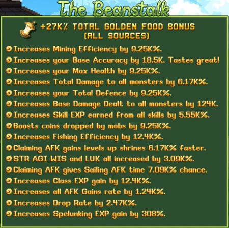
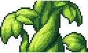
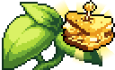
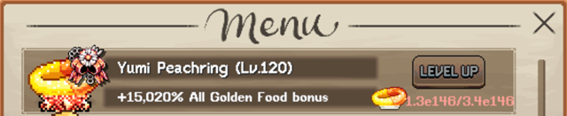

최적 Golden Food 파밍 위치
캐릭터 인벤토리를 채우고 World 6 Spirit Village에 위치한 Beanstalk을 완성하기 위해 이 위치들을 활용하세요. 현재 활동에 맞게 장착 Golden Food를 항상 교체하는 것을 권장하며, 결국 모든 캐릭터가 Cheese, Grilled Cheese Nomwich, Golden Dumpling의 최대 스택을 갖추는 것이 좋습니다. 이 세 가지는 폭넓게 유용하기 때문입니다.
Golden Food는 다음 두 가지 방법으로 파밍합니다:
- Active(직접 플레이) & AFK(방치) 파밍: 아래에 명시된 최적 캐릭터 구성으로 보통 Divine Knight가 Active Crystal Monster(크리스탈 몬스터) 소환 구성을 사용합니다. Golden Food는 캔디를 쓰거나 높은 드롭률로 AFK 파밍하는 방법도 있습니다.
- 콜로세움 파밍: 콜로세움에서 Golden Food를 파밍할 때는 Divine Knight의 광역 공격과 Orb of Remembrance 탤런트 때문에 선호됩니다. 단 Orb 탤런트는 World 5와 World 6 콜로세움에서는 작동하지 않으므로 점수를 최대화하는 광역 공격 캐릭터를 선택하면 됩니다(예: Bubonic Conjuror). World 5와 World 6에서는 Gold Food Coupon도 드롭되며, 이를 사용하면 Nomwich, Jam, Kebabs, Meat Pie, Bread, Ham 중 하나로 바꿀 기회를 얻습니다.


| 황금 음식 (효과) | 최적 파밍 위치 | 구성 & 클래스 비고 |
|---|---|---|
| Golden Peanut (Mining Efficiency) | Anvil Craft | Picnic Stowaway에서 기본 Peanut 레시피를, Rocklyte에서 Golden Peanut 레시피를 해제하세요. |
| Hot Dog | Wode Board (또는 Pop Obol 파밍 중에는 Gigafrog) | 드롭률 & AFK Gains가 있는 모든 클래스 |
| Golden Jam (Max Health) | World 1 & World 6 Colosseum | Divine Knight (드롭률) |
| Golden Nomwich (Base Damage) | Crystal Carrot (World 1 Beans) | Divine Knight (크리스탈 확률 & 드롭률) |
| Golden Kebabs (Total Damage) | World 2, World 5 & World 6 Colosseum | Divine Knight (드롭률) |
| Golden Meat Pie (Total Defence) | Crystal Crabal (World 2 Tyson 또는 Sandy Pots) | Divine Knight (크리스탈 확률 & 드롭률) |
| Butter Bar (Accuracy) | Butterfly Bar Catching (Bandit Bob's Hideout) | Bowman (드롭률 & 스킬링 AFK) |
| Golden Ham (Skill EXP) | Crystal Cattle (World 3 Dedotated Ram) | Divine Knight (크리스탈 확률 & 드롭률) |
| Golden Cheese (Shrine AFK Gains) | Crystal Cattle (World 3 Dedotated Ram) | Divine Knight (크리스탈 확률 & 드롭률) |
| Golden Bread (Coin Drop) | World 3 & World 5 Colosseum | Divine Knight (드롭률) |
| Golden Ribs (Fishing Efficiency) | Crystal Custard (World 4 Clammie) | Divine Knight (크리스탈 확률 & 드롭률) |
| Golden Grilled Cheese Nomwich (All Stat) | Crystal Capybara (World 5 Tremor Wurm) | Divine Knight (크리스탈 확률 & 드롭률) |
| Golden Hampter Gummy Candy (Sailing AFK Time) | Crystal Capybara (World 5 Tremor Wurm) | Divine Knight (크리스탈 확률 & 드롭률) |
| Golden Nigiri (Class EXP) | Crystal Candalight (World 6 Minichief Spirit) | Divine Knight (크리스탈 확률 & 드롭률) |
| Golden Dumpling (AFK Gain) | Crystal Candalight (World 6 Minichief Spirit) | Divine Knight (크리스탈 확률 & 드롭률) |
| Golden Cake (Drop Rate) | Anvil Craft | Demented Spiritlord 미니보스에서 황금 케이크 레시피 해제 |
| Golden Saltwater Taffy (Spelunking EXP) | Crystal Cuttlefish (World 7 Coralcave Guardian) | Divine Knight (크리스탈 확률 & 드롭률) & 드롭률 & AFK Gains가 있는 모든 클래스 |



Beanstalk 개요
World 6에서 Beanstalk을 해제하면 Golden Food 보너스가 더 이상 제한된 캐릭터 음식 슬롯에 장착할 필요 없는 계정 전체 패시브 보너스로 전환됩니다. 그래도 캐릭터 음식 슬롯에 강력한 Golden Food를 계속 장착하면 Beanstalk 보너스에 추가됩니다.

각 Beanstalk 업그레이드의 출처는 아래와 같으며, Beanstalk에 추가되려면 각 Golden Food를 10,000 → 100,000 → 1,000,000개 순서로 드롭해야 합니다.

| 업그레이드 | 출처 | Beanstalk Golden Food 레벨 |
|---|---|---|
| Gold Food Beanstalk | Jade Emporium 업그레이드 | 10,000 |
| Supersized Gold Beanstacking | Jade Emporium 업그레이드 | 100,000 |
| Urie's Special Childhood Rock | Sad Urie Quest (Plastic Basin World 7) | 1,000,000 |

Golden Food 보너스 출처
Golden Food 효과 보너스는 캐릭터 인벤토리와 Beanstalk에서의 Golden Food 강도를 높이는 핵심 요소입니다. 한 캐릭터의 모든 출처를 합산한 현재 총 Golden Food 보너스는 World 6의 Beanstalk에서 확인할 수 있습니다.
다음은 강도 순(높은 것부터 낮은 것)으로 나열한 주요 보너스입니다:
| 업그레이드 | 효과 | 출처 |
|---|---|---|
| Yumi Peachring | 모든 Golden Food 보너스 +2% | Cooking (World 4) |
| Shaman Family Bonus | Golden Food의 보너스 1.36배 증가 (캐릭터 레벨 1,000 기준) | Shaman 클래스 |
| Secret Set | Gold Food 효과 1.25배 | Armor-Set Smithy 장비 세트 (World 3) |
| Vanillie | Golden Food 보너스 +2,500% | 익스클루시브 펫 |
| Midusian Appetite | 총 Golden Food 보너스 +(레벨당 500)% | World 7 Legend Talents (Red 8) |
| Golden Apple Stamp | Golden Food 효과 +% | Mutton 7 Figure Followers 퀘스트 (Freefall Caverns World 1) |
| Shimmeron Bubble | Gold Food 효과 +% (레벨 3,960에서 79%) | 연금술 버블 |
| Emoji Veggie | 모든 Golden Food 보너스 +(10/25/40/60/80)% | 연금술 시길 |
| Gumm Stick | Golden Food 보너스 +50% | Sneaking Pristine Charms |
| Haungry For Gold | Golden Food 보너스 +% (캐릭터 전용) | 전사 탤런트 |
| Apocalypse Wow | Death Bringer에서 10억 번 처치한 몬스터마다 Gold Food 효과 +% (모든 캐릭터에 적용) | Death Bringer 탤런트 |
| Beanbie Major | Golden Food 보너스 +20% | Seraph Star Signs |
| Gold from Lead | Golden Food 보너스 +10% | Mr Pigibank Bribe |
| Nutty Crafter | 모든 Golden Food 보너스 +5% | 업적 (World 1) |
| Beanstacker Trainee | 모든 Golden Food 보너스 +2% | 업적 (World 6) |
| Beanstacker Prodigy | 모든 Golden Food 보너스 +3% | 업적 (World 6) |
| Bort The Cornhusk Card | Gold Food 효과 +% (패시브) | 이벤트 카드 |
| Purp Mushroom | Golden Food 보너스 +5% | Shallow Waters 펫 |
Golden Food 2배 드롭 출처
이 유용한 출처들은 Active 및 AFK 플레이에서 Golden Food 스택을 쌓는 데 걸리는 시간을 줄여줍니다.
| 업그레이드 | 효과 | 출처 |
|---|---|---|
| Double Aint Enough (Yellow 6) | "2배 동상 및 황금 음식 드롭"이 이제 레벨당 +1배 번들로 드롭됩니다! | World 7 Legend Talent |
| Creamy Orange Palette Colour | 몬스터가 Golden Food를 2배로 드롭할 확률 +X% | Gaming |
| Parallel Golden Food | Golden Food가 2배 수량으로 드롭될 확률 % | Arcane Cultist Tesseract |
| Advice on Materialism | 황금 음식 드롭 2배 확률 % | Advice Fish (World 7 Doodle Reef) |
 Autumn Breeze Pack Autumn Breeze Pack |
동상 & Golden Food 드롭 2배 | Gem Shop |